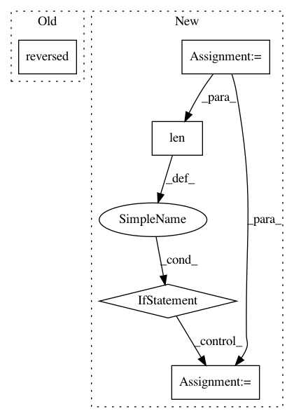

1b8ca89144d2eb858ef0763a6f9b272619b7ee59,api-examples/transformer_utils.py,NextTurnPredictionFileLoader,process_line,#NextTurnPredictionFileLoader#Any#,420
Before Change
return None
q_vec, q_valid_lengths = self.vectorizer.run(q.split(), self.vocab)
else:
q_vec, q_valid_lengths = self.vectorizer.run(reversed(q.split()), self.vocab)
q_vec = np.roll(q_vec[::-1], -(self.vectorizer.mxlen - q_valid_lengths))
r_vec, r_valid_lengths = self.vectorizer.run(r.split(), self.vocab)
After Change
else:
q = [self.vectorizer.vocab.get(x, Offsets.UNK) for x in self.vectorizer.iterable(q)]
q_valid_lengths = len(q)
if q_valid_lengths > self.vectorizer.mxlen:
start = q_valid_lengths - self.vectorizer.mxlen
q_vec = np.array(q[start:], dtype=np.long)
else:
q_vec = np.zeros(self.vectorizer.mxlen, dtype=np.long)
q_vec[:q_valid_lengths] = np.array(q)
r_vec, r_valid_lengths = self.vectorizer.run(r.split(), self.vocab)
return q_vec, r_vec
In pattern: SUPERPATTERN
Frequency: 3
Non-data size: 5
Instances
Project Name: dpressel/mead-baseline
Commit Name: 1b8ca89144d2eb858ef0763a6f9b272619b7ee59
Time: 2020-10-28
Author: dpressel@gmail.com
File Name: api-examples/transformer_utils.py
Class Name: NextTurnPredictionFileLoader
Method Name: process_line
Project Name: mil-tokyo/webdnn
Commit Name: 2571186c26968de784585bdabf0c0979e9608a85
Time: 2017-04-20
Author: y.kikura@gmail.com
File Name: src/graph_builder/optimizer/util.py
Class Name:
Method Name: listup_operator_in_order
Project Name: suragnair/alpha-zero-general
Commit Name: e001a978a88cdeb352404e653704521e343c78f2
Time: 2017-12-04
Author: jjw.megha@gmail.com
File Name: game/board.py
Class Name: Board
Method Name: make_move